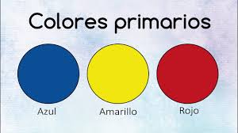

uso óptimo de la teoría de los colores te ayudará incrementar tus ventas. Sólo debes entender
claramente los siguientes puntos:
1.Al que está Enfocado tú Negocio .
Debemos tener en cuenta a quién nos dirigimos, cómo es nuestro público potencial o buyer persona y dónde vive,
porque los colores pueden estar sujetos a significados diferentes que van a depender principalmente a la cultura
que nos asociemos.
Se debe considerar que los individuos generalmente reaccionan automáticamente e interpretan de manera instantánea ,y los
lores tienden a ser mas efectivos que las palabras que en una publicidad queramos transmitir. Por eso, debemos tener en
cuenta en nuestra estrategia de marketing la psicología del color ,es de mucho cuidado el impacto inicial y ayudara a
recordar fácilmente la marca que estemos impulsando a largo plazo.
2.Influencia de los Colores.
Los colores están relacionados directamente con las aprension por parte de la persona, en cuanto a tomar decisiones por cuenta propia, ya que influyen directamente e indirecta con su presencia en el entorno del tomador de decisiones. Esto conlleva al "efecto demostración" entre consumidores, dado que unos imitan a otros en su comportamiento de vida y de compra.
3. Los Clientes y los Colores.
Algunas de las tendencias actuales en cuanto a colorimetría de productos e identidad corporativa, señalan lo siguiente:
a.La psicología de los colores primarios

El amarillo aunque es un tono alegre puede llegar a generar cansancio visual, nos representa Lógica,optimismo,vision,confidencia.
El rojo es un color icónico utilizado por marcas como Coca Cola y Toyota, capta velozmente la atención,transmite emoción ,despierta apetito puede llegar a afectar el rendimiento en tareas que exijan concentración este color representa energía,amor,excitación,acción,audacia,pasión
El azul es el color preferido por los hombres. Genera la calma, la productividad y la serenidad, por lo que es el más usado en las oficinas. También es sinónimo de confianza y seguridad, por lo que es ideal para aseguradoras, bancos e instituciones financieras.
b.Colores secundarios y terciarios
Verde: Se asocia a la salud, a la tranquilidad, al dinero y a la naturaleza. Sin embargo, el efecto del verde dependerá mucho de su tonalidad; los tonos profundos evocan abundancia, mientras que los claro, calman.Este color nos representa lo organico,natural,cuidadoso,frescura,crecimiento.
Morado:
El morado es muy valorado en el mundo del marketing, puesto que representa lo sofisticado y la elegancia. Además, se suele asociar este color al misterio, la nostalgia , la espiritualidad ,la lealtad, bienestar, éxito y sabiduría. Ésta es la razón por la que reyes y otros líderes usan atuendos morados.
Rosa:
El rosa es un color con unos atributos bien acotados: Representa la dulzura, la delicadeza, la amistad y el amor puro. Nuestro acervo cultural lo asocia también a lo femenino.Es un color que generá tranquilidad . Al igual que en el color verde dependerá de los tonos , los oscuros se usan para expresar diversión, emoción, energía y juventud por lo que son perfectos para accesorios de niñas y mujeres; los rosas claros se asocian al romance.
Blanco: Se encuentra relacionado a la pureza, a la inocencia y al vacío. Es ideal para usar en espacios pequeños ya que da una sensación de amplitud.En una tienda en línea, el color blanco tiende a ser el más utilizado como color de fondo para las fotos de producto. Las páginas de tu Ecommerce probablemente tendrán un fondo blanco con una fuente negra. Esto se debe a que la fuente negra sobre fondo blanco es la mejor combinación de colores para la legibilidad.
Gris
El gris tiene connotaciones un tanto distintas según la cultura. Mientras alguns personas perciben este color como la indeterminación o la mediocridad, los expertos en psicología del color le dan un significado distinto:la paz, la tenacidad y la tranquilidad.
Verde
El verde representa la juventud, la esperanza y la nueva vida, pero también representa la acción y lo ecológico. El consumidor que da prioridad al color verde es utilitario, amante de lo fresco y natural.
Negro
Debido a su relación con la oscuridad, el negro simboliza el misterio y lo desconocido. En el mundo de la moda, el negro es el color de la elegancia, la formalidad y la sobriedad.
Dorado
El color Oro o Dorado no se parece a ningún otro color. Quién piensa en él, piensa ante todo en el metal precioso. Se le relaciona con dinero, felicidad y lujo, sentimiento de alegría y viveza .
Turquesa
Es un sedante de emociones, posee la capacidad de serenar los más profundos sentimientos y pensamientos, esta tan relacionado con dicho ecosistema que las personas al percibirlo con la mirada caen atrapados en sus encantos, dejándose llevar por la paz que transmite.